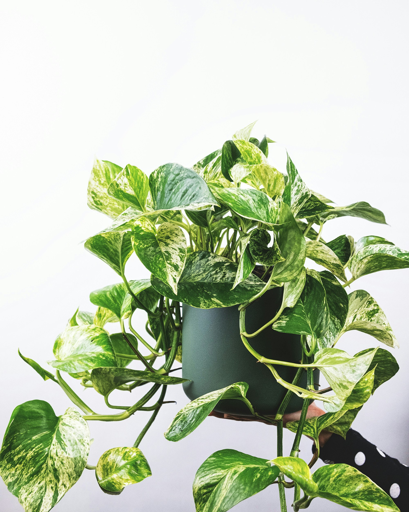
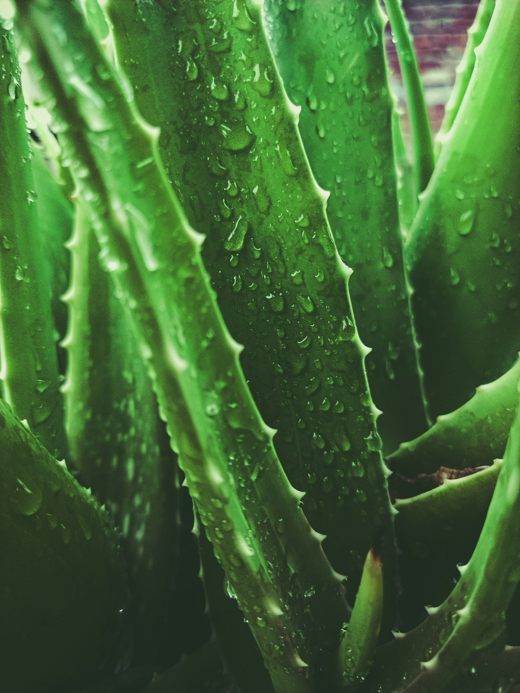

Indoor Plant Guides › Low-Maintenance Plants
Best Low-Maintenance Indoor Plants That Are Hard to Kill
A beginner's honest guide — no fancy tools, no confusing advice. Just plants that actually survive.
If you've killed a plant before, you're not alone. Most beginners start with the wrong plant — one that needs more attention than they can give. The good news? There are plants out there that almost want to be ignored. This guide covers the best ones.
1. Pothos (Epipremnum aureum)

The easiest plant you'll ever own
Pothos is the number one plant for beginners. It grows in almost any light, survives irregular watering, and tells you when it's thirsty by drooping slightly — then bounces back after a good drink.
Care Tips
- Tolerates low light well
- Let soil dry between waterings
- Droops when thirsty — bounces back fast
Common Mistake
- Overwatering — most common killer
- Check soil before watering
2. Snake Plant (Sansevieria)

Thrives on neglect
Snake plants are nearly indestructible. They can go weeks without water, survive in low light, and still look good. If you travel often or forget to water, this is your plant.
Care Tips
- Survives weeks without water
- Great for low light rooms
- Water less in winter
Common Mistake
- Watering too often causes root rot
- Root rot is the only real way to kill it
3. ZZ Plant (Zamioculcas zamiifolia)

Built for dark rooms and forgetful owners
ZZ plants store water in their roots, which means they're drought-tolerant by nature. They grow slowly, need very little light, and look beautiful with their glossy dark green leaves.
Care Tips
- Stores water in roots — drought tolerant
- Perfect for dark corners
- Slow grower, very low maintenance
Common Mistake
- Direct sun yellows and burns leaves
- Overwatering causes root rot
4. Spider Plant (Chlorophytum comosum)

Great for hanging baskets
Spider plants are forgiving, fast-growing, and fun — they produce little "baby" plants that hang down like spiders. You can propagate them easily and give them to friends.
Care Tips
- Produces baby plants you can propagate
- Great in hanging baskets
- Fast grower, very forgiving
Common Mistake
- Tap water fluoride browns the tips
- Use filtered or rainwater if possible
5. Peace Lily (Spathiphyllum)

Tells you exactly when it needs water
Peace lilies droop dramatically when they need water — and perk right back up within hours of watering. They also bloom with white flowers indoors, which is rare for low-light plants.
Care Tips
- Droops to signal thirst — very reliable
- Blooms white flowers in low light
- Perks up within hours of watering
Common Mistake
- Direct sunlight scorches the leaves
- Keep away from south-facing windows
6. Rubber Plant (Ficus elastica)

Bold, beautiful, and easy to maintain
Rubber plants have large, glossy leaves and grow tall over time. They prefer bright indirect light but adapt well to most indoor conditions. Water them less in winter.
Care Tips
- Grows tall with large glossy leaves
- Water less in winter
- Check top inch of soil before watering
Common Mistake
- Moving it too often stresses the plant
- Pick a spot and leave it there
7. Aloe Vera

Useful and nearly impossible to kill
Aloe vera is a succulent that thrives on neglect. It needs bright light and very little water. As a bonus, you can use the gel from its leaves on minor burns and skin irritation.
Care Tips
- Let soil dry completely before watering
- Gel soothes minor burns and skin irritation
- Thrives with neglect
Common Mistake
- Overwatering kills it fastest
- Never let it sit in standing water
Common Mistakes Beginners Make
Overwatering — This is the #1 killer of indoor plants. More plants die from too much water than too little. When in doubt, wait another day.
Wrong pot — Always use a pot with drainage holes. Water sitting at the bottom causes root rot.
Too much direct sun — Most indoor plants prefer bright indirect light, not direct sunlight through a window. Move them back a few feet if leaves look washed out or burnt.
Buying the wrong plant first — Start with pothos or a snake plant. Save the fussy plants for when you have more experience.
Which Plant Should You Start With?
If you're a complete beginner, start with a pothos or a snake plant. Both are cheap, widely available, and nearly impossible to kill. Once you build confidence with those, you can try other plants on this list.
Frequently Asked Questions
What is the hardest indoor plant to kill?
Snake plants and ZZ plants are the most resilient. They tolerate low light, irregular watering, and neglect better than almost any other houseplant.
How often should I water indoor plants?
It depends on the plant, pot size, and season — but a good general rule is to check the soil before watering. If the top inch feels dry, water it. If it's still moist, wait.
Can indoor plants survive without sunlight?
Some can manage in low light — pothos, snake plants, ZZ plants, and peace lilies all do well away from windows. But no plant survives in complete darkness.
Why are my plant's leaves turning yellow?
Yellow leaves are usually a sign of overwatering. Let the soil dry out more between waterings and make sure your pot has drainage holes.